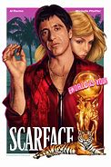

Scarface
Scarface is a 1983 American crime drama film directed by Brian De Palma, written by Oliver Stone, and starring Al Pacino.[6] It is a remake of the 1932 film of the same name,[7][8][9] in turn based on the 1930 novel by Armitage Trail.[7][10][9] It tells the story of Cuban refugee Tony Montana (Pacino), who arrives penniless in Miami during the Mariel boatlift and becomes a powerful drug lord. The film co-stars Steven Bauer, Michelle Pfeiffer, Mary Elizabeth Mastrantonio, Robert Loggia, Míriam Colón and F. Murray Abraham.[6] Pacino became interested in a remake of the 1932 version after seeing it, and he and producer Martin Bregman began to develop it. Sidney Lumet was initially hired to direct the film but was replaced by De Palma, who hired Stone to write the script. De Palma dedicated this version of Scarface to the memories of Howard Hawks and Ben Hecht, the director and screenwriter, respectively, of the original film.[11] Filming took place from November 1982 to May 1983, in Los Angeles and Miami. The film's soundtrack was composed by Giorgio Moroder. Scarface premiered in New York City on December 1, 1983, and was released on December 9 by Universal Pictures. The film grossed $45 million at the domestic box office and $66 million worldwide. Initial critical response was negative due to its excessive violence, profanity, and graphic drug usage. Some Cuban expatriates in Miami objected to the film's portrayal of Cubans as criminals and drug traffickers. In the years that followed, some critics have reappraised it, considering it one of the greatest gangster films ever made.[12] Screenwriters and directors such as Martin Scorsese have praised the film, and it has been referenced extensively in pop culture, especially in hip hop music,[13][14] as well as comic books, television programs, and video games. The film is regarded as a cult classic.[15][16]